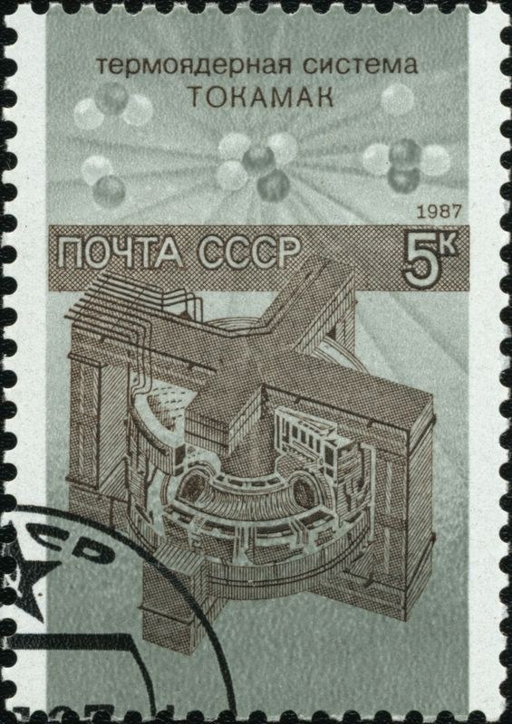
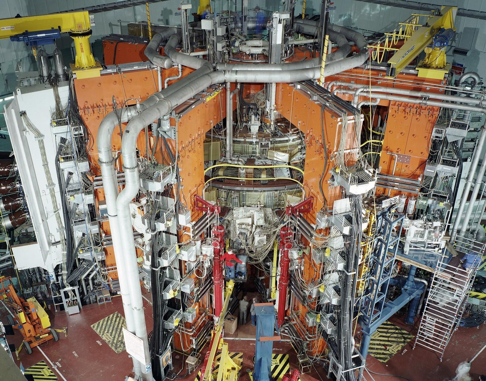

Big machines and world politics: 1970s to 1985
Why did fusion machines grow so large in the 1970s and 1980s?
Prior knowledge
- After the 1969 Culham measurement, laboratories around the world built tokamakschapter Science across the Iron Curtain
- A useful fusion plasma needs high temperature, density and energy confinement timechapter Plasma: the fourth state of matter
- Electric power in a resistor $P = RI^2$ and kinetic energy $E_\text{k} = \frac{1}{2} m v^2$ (earlier physics courses)
Think about it
The T-3 tokamak of 1968 fitted into one room. JET, which started in 1983, stands in a hall the size of a cathedral, and it was paid for by a whole group of countries. In just fifteen years, fusion machines grew from laboratory experiments into some of the largest scientific instruments on Earth.
In the same years, the world had an oil crisis, and the leaders of the two Cold War superpowers met for the first time in six years.
What made fusion machines grow so big, and how did world politics shape them?
Review: what does a fusion plasma need?
Predict
Make your predictions before investigating 2 questions
Prediction 1: heating with the current
Prediction 2: the oil crisis and the budget
Investigate
How to read: a newspaper desk
Work in pairs. You are the science desk of a newspaper in 1985, preparing a page on Fusion: fifteen years of big machines. Read the five sections. For each, note one physics fact and one fact about money or politics. You will need your notes for the tasks.
Word bank
ohmic heating · resistance · a neutral beam · radio waves · a superconductor · a coil · liquid helium · an oil embargo · energy security · a budget · a joint project · a summit · a joint statement
Sentence starters
- The physics problem was …
- Scientists solved it by …
- The money came from …, because …
- This machine was built by …
- Politics affected fusion when …
After the stampede
After the Culham measurement of 1969, laboratories in many countries built tokamaks. They soon found that the tokamak worked, but not well enough. A useful fusion plasma of deuterium and tritium must reach about $100$ million kelvin, be dense enough, and keep its energy long enough. The early tokamaks reached about ten million kelvin. The 1970s became a decade of three problems: how to heat the plasma further, how to build stronger magnets, and how to pay for much larger machines, because a bigger plasma loses its heat more slowly.
Heating beyond the current
A tokamak plasma carries a large electric current. Like the current in a kettle, it heats the plasma because the plasma has electrical resistance. This is ohmic heating. But a hot plasma is a better conductor than a cold one: as the temperature rises, the resistance falls, and the current heats less and less. Above about $20$–$30$ million kelvin, ohmic heating is no longer enough, and other methods are needed.
The main new method of the 1970s was neutral beam injection. Ions of hydrogen or deuterium are accelerated to tens of kiloelectronvolts and then turned into neutral atoms, so that the magnetic field does not deflect them on their way in. Inside the plasma the fast atoms are ionised, trapped by the field and share their energy with the plasma in collisions. A second method uses radio waves: an antenna sends waves at a frequency that matches the circling motion of the ions or electrons, and the particles absorb their energy.
In Princeton, the Princeton Large Torus (PLT) started in December 1975. With four neutral beam injectors, it reached ion temperatures of about $60$ million kelvin on the night of 24 July 1978. The result was shown at a conference in Innsbruck in August 1978: a tokamak could reach the temperatures a reactor needs. Temperature alone is not enough, though: density and confinement time had to improve too.
Stronger magnets
The magnetic field of a tokamak comes from coils of copper. Copper has resistance, so a strong field needs huge electric power and heats the coils, and the machines could run only in short pulses. A superconductor has no electrical resistance at all when it is cooled to a few kelvin, usually with liquid helium. A current then flows without losses, and a strong field can be kept for a long time. The Soviet tokamak T-7 at the Kurchatov Institute was the first to use superconducting magnets, in 1979. Its larger successor T-15 produced its first plasma in 1988. Today ITER and many other machines use superconducting magnets.

Oil, money and big machines
In October 1973 Arab oil-producing countries stopped selling oil to the United States and several other countries that had supported Israel in the Yom Kippur War. The oil crisis lasted until March 1974, and oil prices rose sharply. Suddenly, energy security was a political priority. Governments in the West spent much more on new energy sources, including fusion.
The money made bigger machines possible:
- TFTR, the Tokamak Fusion Test Reactor in Princeton, was approved in the mid-1970s, built from 1980 and started in 1982. It was designed to burn real deuterium–tritium fuel, which it did from December 1993; in 1994 it produced $10.7\ \text{MW}$ of fusion power.
- JET, the Joint European Torus, was a European project. After a long debate about the site, the Research Ministers chose Culham in England on 25 October 1977. The Council of Ministers agreed to set up the JET Joint Undertaking on 30 May 1978, and it began work on 1 June 1978, with funding from the European Community's members. JET made its first plasma on 25 June 1983.
- JT-60 in Naka, Japan, built by the Japan Atomic Energy Research Institute, started on 8 April 1985.
- In the Soviet Union, the superconducting T-15 followed in 1988.
With TFTR and JET, JT-60 was one of the "big three" tokamaks of the 1980s. In 1978 scientists from Europe, Japan, the Soviet Union and the United States also began INTOR, a study under the International Atomic Energy Agency for a shared international tokamak reactor. It was never built, but it brought the four sides' fusion experts together.

Data: the big machines
Statistical data · Start dates and plasma radii from the Wikipedia articles on the machines and PPPL (checked 1 November 2026). JT‑60 is the original machine of 1985, not the later JT‑60U.
The major radius is the distance from the centre of the doughnut to the middle of the plasma tube; the minor radius is the radius of the tube itself. A larger plasma keeps its heat longer, because the heat must travel further to escape.
| Machine (start) | Built by | Major radius (m) | Minor radius (m) |
|---|---|---|---|
| PLT (1975) | USA | 1.32 | 0.40 |
| TFTR (1982) | USA | 2.52 | 0.87 |
| JET (1983) | EC | 2.96 | 1.25 |
| JT‑60 (1985) | Japan | 3.0 | 0.85–0.95 |
| T‑15 (1988) | USSR | 2.43 | 0.70 |
USA: the United States (Princeton); EC: the European Community (Culham, England); Japan: Naka; USSR: the Soviet Union (Moscow).
Geneva 1985: an offer between rivals
In 1985 the Cold War was still cold. Both superpowers had huge arsenals of nuclear weapons. In March 1985 Mikhail Gorbachev became the Soviet leader, and from 19 to 21 November 1985 he met US President Ronald Reagan in Geneva, their first summit. They did not agree on the big arms-control questions. But Gorbachev suggested that the two countries build a fusion experiment together, based on the INTOR studies. The idea came from his scientific adviser Evgeny Velikhov, a fusion physicist.
The joint statement of 21 November 1985 said that "a nuclear war cannot be won and must never be fought". In a section on fusion research, it began: "The two leaders emphasized the potential importance of the work aimed at utilizing controlled thermonuclear fusion". It called for "the widest practicable development of international cooperation in obtaining this source of energy", which it described as "essentially inexhaustible, for the benefit for all mankind" (the wording of the original text).
What followed took decades. At the Reykjavik summit of October 1986 a committee of four partners was formed: the European Community (through Euratom), Japan, the Soviet Union and the United States. In March 1987 they met at the IAEA in Vienna and launched conceptual design studies for the International Thermonuclear Experimental Reactor, ITER (iter is Latin for "the way"). The conceptual design itself was made in 1988–1990 and the engineering design in 1992–1998. The United States left the project in 1998 and returned in 2003, and China, South Korea and India joined. In 2005 Cadarache in France was chosen as the site, and the ITER Agreement was signed on 21 November 2006, 21 years to the day after the Geneva statement.
Big science has big problems. ITER's cost has grown to several times the first estimates, and its schedule has slipped again and again. As of November 2026, the official plan (the baseline of 2024) is to start research operation in 2034 and deuterium–tritium operation in 2039. These are institutional plans, not results.
Source question: the Geneva statement
Read the quotations from the joint statement of 21 November 1985 in the section above. Discuss with a partner, then write three or four sentences. Reagan and Gorbachev could not agree on arms control, but they did agree on fusion. Give two reasons why fusion was an easier topic for the two rivals.
Sentence starters
- Fusion was easier because …
- Unlike nuclear weapons, fusion …
- The statement says …, which shows …
- The stronger reason is …, because …
Pair work: each partner suggests one reason; then decide together which is the stronger one.
Model answer
Fusion power was still decades away, so cooperating on it gave neither side a military advantage or a risk. Both countries had already shared fusion results openly since 1958 and had worked together in the INTOR study, so their scientists trusted each other. The machines needed were so expensive that sharing the cost made sense for both. Finally, a joint fusion project was a positive symbol: the statement speaks of energy "for the benefit for all mankind", which helped both leaders show that the relationship was improving.
Assess your own answer
Tick the points your own answer already contains.
Review the theory.
Hint 1: a guiding question
Could fusion help either side to win a war?
Hint 2: what is the connection
Who had already worked together in INTOR since 1978?
Put the events in order
Theory
Key idea
From 1970 to 1985 fusion research moved from small laboratory machines to large national and international facilities, for reasons of physics, money and politics.
- Physics: the current alone cannot heat a plasma beyond about $20$–$30$ million kelvin, because a hotter plasma has less resistance. Neutral beams and radio waves took PLT to about $60$ million kelvin in 1978. Superconducting magnets (first in T-7, 1979) made strong fields possible without huge losses. A bigger plasma keeps its heat longer, so the machines grew.
- Money: the oil crisis of 1973–1974 made energy security urgent. The US fusion budget grew about eightfold from 1973 to 1978, and TFTR, JET, JT-60 and T-15 were built.
- Politics: machines became so expensive that countries shared them. JET was a European project, INTOR an international study, and in 1985 the Cold War rivals agreed at Geneva to work together on fusion. That decision led to ITER.
Common misconception
"PLT reached $60$ million kelvin, so the main problem of fusion was solved in 1978." Temperature is only one of three conditions. The plasma must also be dense enough and keep its energy long enough (the Lawson criterion). In 1978 these were still far from reactor values, and no machine had yet used deuterium–tritium fuel.
A second mistake is to think that the Geneva summit of 1985 ended the Cold War. It did not: it was the first step of a slow thaw. Cooperation on fusion was easier than on weapons because fusion power was far away and gave neither side a military advantage.
Back to your predictions
Compare your two predictions with the sections. Then answer the opening question in two sentences: what made fusion machines grow so big, and how did world politics shape them?
Would you change your prediction?
Examples
Once you have studied the chapter's theory, move on to the guided examples. In the first you follow a worked solution step by step; in the next ones you make the choices yourself, and the hints help if you get stuck.
How fast are the beam atoms?
The neutral beam injectors of PLT accelerated particles to an energy of $40\ \text{keV}$. Calculate the speed of a deuterium atom with the kinetic energy $E_\text{k} = 40\ \text{keV}$. The mass of a deuterium atom is $m = 3.344 \cdot 10^{-27}\ \text{kg}$. Give the speed in units of $10^{6}\ \text{m/s}$: for example, type $4.2$ for $4.2 \cdot 10^{6}\ \text{m/s}$.
Hint 1: a guiding question
Convert the energy to joules: $1\ \text{keV} = 1000 \cdot 1.602 \cdot 10^{-19}\ \text{J}$.
Hint 2: what is the connection
Solve $E_\text{k} = \frac{1}{2} m v^2$ for $v$: $v = \sqrt{2 E_\text{k} / m}$.
Hint 3: an intermediate step
$E_\text{k} = 6.408 \cdot 10^{-15}\ \text{J}$
Show the solution
Given
kinetic energy $E_\text{k} = 40\ \text{keV}$; mass of a deuterium atom $m = 3.344 \cdot 10^{-27}\ \text{kg}$; $1\ \text{eV} = 1.602 \cdot 10^{-19}\ \text{J}$
Find
the speed $v$
Principle
The beam energy is kinetic energy, $E_\text{k} = \frac{1}{2} m v^2$. The speed is far below the speed of light (checked below), so the classical formula is accurate enough.
Formula
$v = \sqrt{\dfrac{2 E_\text{k}}{m}}$
Unit conversions
Substitution
$$\begin{aligned} v &= \sqrt{\frac{2 \cdot 6.408 \cdot 10^{-15}\ \text{J}}{3.344 \cdot 10^{-27}\ \text{kg}}} \\ &= \sqrt{3.833 \cdot 10^{12}\ \text{m}^2/\text{s}^2} \\ &= 1.958 \cdot 10^{6}\ \text{m/s} \end{aligned}$$
Answer
$v \approx 1.96 \cdot 10^{6}\ \text{m/s}$
Three significant figures as in the mass (the energy $40\ \text{keV}$ is a round design value).
Reasonableness
This is about $2000\ \text{km}$ every second, but only ${1.958 \cdot 10^{6}} : {3.00 \cdot 10^{8}} \approx 0.65\ \%$ of the speed of light, so the classical formula is fine. The beam atoms are much faster than the plasma ions they heat: at $60$ million kelvin a deuterium ion has a typical energy of only about $5\ \text{keV}$. In collisions the fast atoms share their energy with the plasma.
Find the error
Discuss: public money for fusion?
Work in groups of four: two students argue for and two against. Question: Should governments spend more public money on fusion research? First argue as if it were 1976, just after the oil crisis. Then argue as if it were today. Did your arguments change? (You will return to this question in the chapter on reactor designs.)
Word bank
energy security · a long-term investment · a risk · an opportunity cost (what else the money could pay for) · renewable energy · climate change · a breakthrough · a delay
Sentence starters
- We should spend more, because …
- The money would be better spent on …
- In 1976 the strongest argument was …, but today …
- A limitation of this argument is …
- The evidence suggests that …
Write: 1976 and today
After the discussion, write five or six sentences: give the strongest argument for more public money in 1976, the strongest argument against today, and your own conclusion. Use at least one fact from this unit.
Sentence starters
- In 1976, the strongest argument for … was …
- Today, an important argument against is …
- On the other hand, …
- In my view, governments should …
Group work: argue first, then write on your own.
Model answer
In 1976 the strongest argument for more money was energy security: the oil crisis had shown that depending on imported oil was dangerous, and fusion promised a fuel that every country has, deuterium from water. The US budget rose from 40 to 332 million dollars between 1973 and 1978, and big machines like TFTR were built. Today a strong argument against is the opportunity cost: renewable energy such as wind and solar power is already cheap and can cut emissions now, while no fusion machine has yet produced electricity. On the other hand, fusion could one day give steady power without carbon dioxide. In my view governments should keep funding fusion as long-term research, but not at the expense of energy that works today.
Assess your own answer
Tick the points your own answer already contains.
Review the theory.
Hint 1: a guiding question
What had just happened to oil prices in 1973–1974?
Hint 2: what is the connection
What else could the money pay for today?
Self-assessment
Finally, assess whether you have reached the chapter's goals. If an answer is wrong, you get a suggestion of what to review.
1. Concept task: Why neutral?
2. Concept task: Superconducting magnets
3. Concept task: Geneva 1985
4. Explanation task: Transfer: two Genevas
Geneva appears twice in this chapter: in 1958 and in 1985. Write three or four sentences comparing them. What happened to fusion research at each meeting, and what do the two meetings show about how the Cold War influenced science?
Sentence starters
- In 1958, …
- In 1985, by contrast, …
- Both meetings show that …
Model answer
In 1958 the United States, the Soviet Union and Britain declassified their fusion research at the UN conference in Geneva, because all of them had met the same hard plasma problems and secrecy no longer helped. In 1985 the leaders of the two superpowers went further and called for international cooperation on fusion, which led to ITER. Both meetings show that the Cold War first made fusion secret and competitive, but that the difficulty and the cost of fusion pushed the rivals towards openness and then towards working together.
Assess your own answer
Tick the points your own answer already contains.
Review the theory.
Hint 1: a guiding question
What did the scientists show each other in 1958?
Hint 2: what is the connection
What did Gorbachev propose in 1985?
Summary
- Ohmic heating weakens as the plasma gets hotter (its resistance falls), so neutral beam injection and radio-wave heating were developed; PLT reached about $60$ million kelvin in July 1978.
- Superconducting magnets have no resistance when cold: T-7 (1979) was the first superconducting tokamak, T-15 (1988) its larger successor.
- The oil crisis of October 1973 – March 1974 increased energy research funding: the US fusion budget grew from about $40$ to $332$ million dollars from 1973 to 1978.
- The big tokamaks TFTR (USA, 1982), JET (Europe, 1983) and JT-60 (Japan, 1985) were built, and INTOR (from 1978) brought the four main fusion powers together.
- At Geneva in November 1985 Gorbachev and Reagan called for international cooperation on fusion. This led to ITER, designed from 1988 and agreed in 2006; as of November 2026, deuterium–tritium operation is planned for 2039.
Le coin français
Geneva, Genève, is a French-speaking city, and ITER is now being built in France (under construction as of November 2026). A superconducting magnet is un aimant supraconducteur. Listen, repeat, and then say the last sentence to your partner.
Photographs and videos
- The JET experiment in 1991. EFDA JET. source, CC BY-SA 3.0
- 1987 Soviet stamp showing the T-15 tokamak. Scanned and processed by Mariluna. source, Public domain